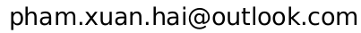

Hai Xuan Pham
Contact: 
I am a research scientist at Samsung AI Center, Cambridge, UK. My research interests span machine learning, computer vision and natural language processing, with emphasis on learning multimodal representations of concepts. I am particularly interested in learning structured (i.e. graph) conceptual representations of actions-objects-attributes from instructional text and videos, which can potentially enable machines to comprehend and interact with real-world environments as well as collaborate with human in everyday activities. I also carried out research on a related topic, cross-modal contrastive learning (CLIP). Furthermore, I have worked on generative models including large language models, GANs, VAEs and diffusion models. More broadly I am eager to solve any problems and challenges that ultimately enable seamless human-machine interaction.
Previously I earned my Ph.D. from Rutgers University, Department of Computer Science, under the supervision of Professor Vladimir Pavlovic. My Ph.D. research focused on multimodal human face and facial expression modeling, combining techniques from machine learning, computer vision, graphics and speech processing. Before that, I worked in the software industry to develop core banking system (at Agribank) and real-time embedded system (at Toshiba). I graduated from Hanoi University of Technology in 2008.